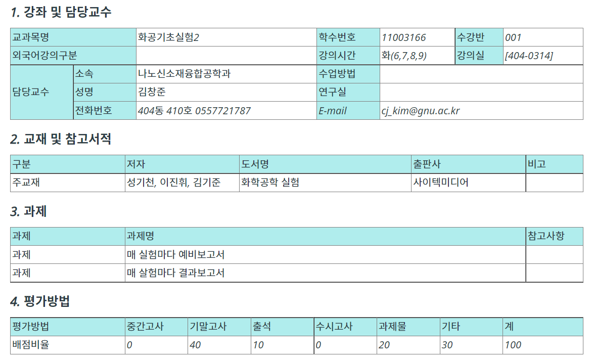

화학공학과 2학년 2학기 과목 정리
5.화공기초실험2
- 강의계획서

- 주별 강의계획
- 교수님 정보
김창준 교수님 / 055-772-1787 / cj_kim@gnu.ac.kr / 연구실 : 404동 410호
- 강의 정보
출석: 30% / 보고서 및 발표: 40% / 시험: 30%
- 강의 정보
단증류
설탕의당화
산가 비누화가
어는점내림
처음 화면으로